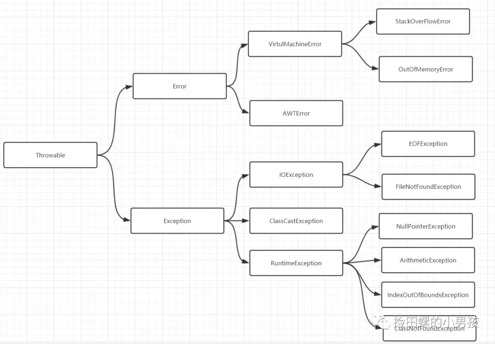
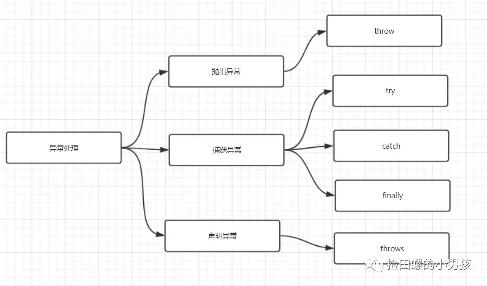
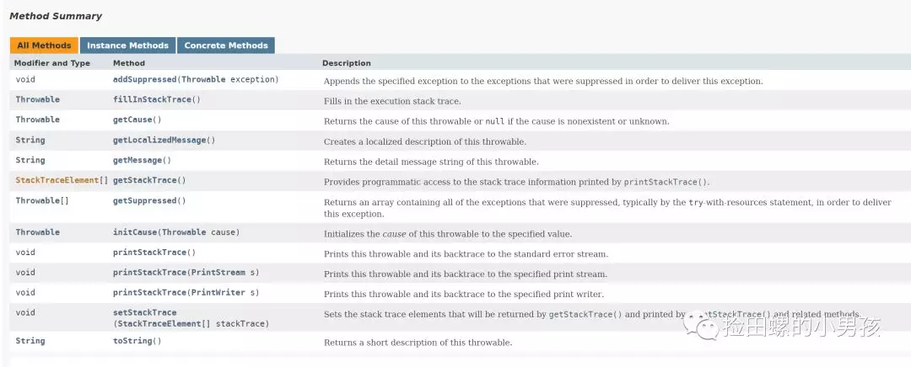
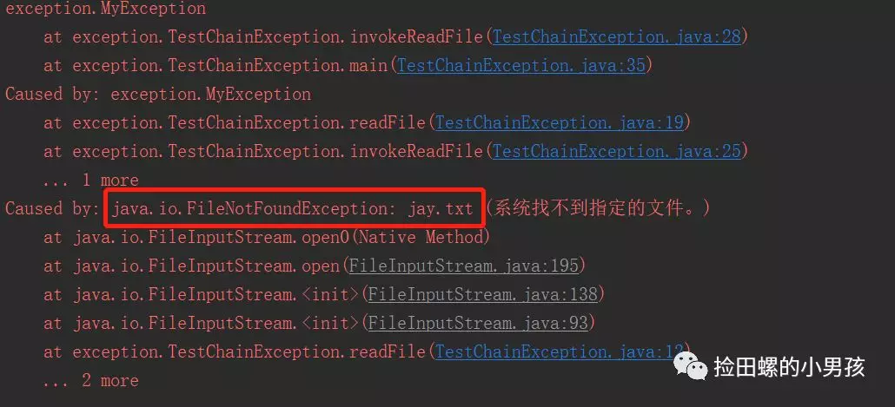
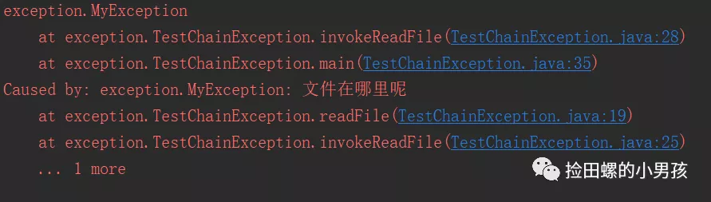
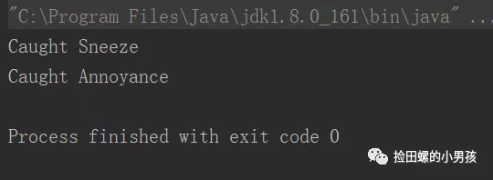

总结了Java异常十个关键知识点，面试或者工作中都有用哦，加油。
异常是指阻止当前方法或作用域继续执行的问题。比如你读取的文件不存在，数组越界，进行除法时，除数为0等都会导致异常。
一个文件找不到的异常：
public class TestException {
public static void main(String[] args) throws IOException {
InputStream is = new FileInputStream("jaywei.txt");
int b;
while ((b = is.read()) != -1) {
}
}
}
运行结果：
Exception in thread "main" java.io.FileNotFoundException: jaywei.txt (系统找不到指定的文件。)
at java.io.FileInputStream.open0(Native Method)
at java.io.FileInputStream.open(FileInputStream.java:195)
at java.io.FileInputStream.<init>(FileInputStream.java:138)
at java.io.FileInputStream.<init>(FileInputStream.java:93)
at exception.TestException.main(TestException.java:10)

从前从前，有位老人，他的名字叫Throwable，他生了两个儿子，大儿子叫Error,二儿子叫Exception。
表示编译时或者系统错误，如虚拟机相关的错误，OutOfMemoryError等，error是无法处理的。
代码异常，Java程序员关心的基类型通常是Exception。它能被程序本身可以处理，这也是它跟Error的区别。
它可以分为RuntimeException（运行时异常）和CheckedException（可检查的异常）。
常见的RuntimeException异常：
- NullPointerException 空指针异常
- ArithmeticException 出现异常的运算条件时，抛出此异常
- IndexOutOfBoundsException 数组索引越界异常
- ClassNotFoundException 找不到类异常
- IllegalArgumentException(非法参数异常)
常见的 Checked Exception 异常：
- IOException (操作输入流和输出流时可能出现的异常)
- ClassCastException(类型转换异常类)
Checked Exception就是编译器要求你必须处置的异常。
与之相反的是，Unchecked Exceptions，它指编译器不要求强制处置的异常，它包括Error和RuntimeException 以及他们的子类。
当异常出现后，会在堆上创建异常对象。当前的执行路径被终止，并且从当前环境中弹出对异常对象的引用。这时候异常处理程序，使程序从错误状态恢复，使程序继续运行下去。
异常处理主要有抛出异常、捕获异常、声明异常。如图：

try{
// 程序代码
}catch(Exception e){
//Catch 块
}finaly{
//无论如何,都会执行的代码块
}
我们可以通过 try...catch...捕获异常代码，再通过 finaly执行最后的操作，如关闭流等操作。
除了 try...catch...捕获异常，我们还可以通过throws声明抛出异常。
当你定义了一个方法时，可以用 throws关键字声明。使用了 throws关键字表明，该方法不处理异常，而是把异常留给它的调用者处理。是不是觉得TA不负责任?
哈哈,看一下demo吧
//该方法通过throws声明了IO异常。
private void readFile() throws IOException {
InputStream is = new FileInputStream("jaywei.txt");
int b;
while ((b = is.read()) != -1) {
}
}
从方法中声明抛出的任何异常都必须使用throws子句。
throw关键字作用是抛出一个 Throwable类型的异常，它一般出现在函数体中。在异常处理中，try语句要捕获的是一个异常对象，其实此异常对象也可以自己抛出。
例如抛出一个 RuntimeException 类的异常对象：
throw new RuntimeException(e);
任何Java代码都可以通过 Java 的throw语句抛出异常。
非检查异常（Error、RuntimeException 或它们的子类）不可使用 throws 关键字来声明要抛出的异常。
一个方法出现编译时异常，就需要 try-catch/ throws 处理，否则会导致编译错误。
try-catch-finally-return 执行描述
如果不发生异常，不会执行catch部分。
不管有没有发生异常，finally都会执行到。
即使try和catch中有return时，finally仍然会执行
finally是在return后面的表达式运算完后再执行的。（此时并没有返回运算后的值，而是先把要返回的值保存起来，若finally中无return，则不管finally中的代码怎么样，返回的值都不会改变，仍然是之前保存的值），该情况下函数返回值是在finally执行前确定的)
finally部分就不要return了，要不然，就回不去try或者catch的return了。
看一个例子
public static void main(String[] args) throws IOException {
System.out.println("result：" + test());
}
private static int test() {
int temp = 1;
try {
System.out.println("start execute try,temp is:"+temp);
return ++temp;
} catch (Exception e) {
System.out.println("start execute catch temp is: "+temp);
return ++temp;
} finally {
System.out.println("start execute finally,temp is:" + temp);
++temp;
}
}
运行结果：
start execute try,temp is:1 start execute finally,temp is:2 result:2
分析
先执行try部分，输出日志，执行 ++temp表达式，temp变为2,这个值被保存起来。
因为没有发生异常，所以catch代码块跳过。
执行finally代码块，输出日志，执行 ++temp表达式.
返回try部分保存的值2.
先来喵一眼异常类的所有方法，如下图:

Returns the detail message string of this throwable.
getMessage会返回Throwable的 detailMessage属性，而 detailMessage就表示发生异常的详细消息描述。
举个例子， FileNotFoundException异常发生时，这个 detailMessage就包含这个找不到文件的名字。
Creates a localized description of this throwable.Subclasses may override this
method in order to produce alocale-specific message. For subclasses that do not
override thismethod, the default implementation returns the same result
as getMessage()
throwable的本地化描述。子类可以重写此方法，以生成特定于语言环境的消息。对于不覆盖此方法的子类，默认实现返回与相同的结果 getMessage()。
Returns the cause of this throwable or null if thecause is nonexistent or unknown.
返回此可抛出事件的原因，或者，如果原因不存在或未知，返回null。
Prints this throwable and its backtrace to thestandard error stream.
The first line of output contains the result of the toString() method for
this object.Remaining lines represent data previously recorded by the
method fillInStackTrace().
该方法将堆栈跟踪信息打印到标准错误流。
输出的第一行，包含此对象toString()方法的结果。剩余的行表示，先前被方法fillInStackTrace()记录的数据。如下例子:
java.lang.NullPointerException
at MyClass.mash(MyClass.java:9)
at MyClass.crunch(MyClass.java:6)
at MyClass.main(MyClass.java:3)
自定义异常通常是定义一个继承自 Exception 类的子类。
那么，为什么需要自定义异常？
Java提供的异常体系不可能预见所有的错误。
业务开发中，使用自定义异常，可以让项目代码更加规范，也便于管理。
下面是我司自定义异常类的一个简单demo
public class BizException extends Exception {
//错误信息
private String message;
//错误码
private String errorCode;
public BizException() {
}
public BizException(String message, String errorCode) {
this.message = message;
this.errorCode = errorCode;
}
@Override
public String getMessage() {
return message;
}
public void setMessage(String message) {
this.message = message;
}
public String getErrorCode() {
return errorCode;
}
public void setErrorCode(String errorCode) {
this.errorCode = errorCode;
}
}
跑个main方测试一下
public class TestBizException {
public static void testBizException() throws BizException {
System.out.println("throwing BizException from testBizException()");
throw new BizException("100","哥，我错了");
}
public static void main(String[] args) {
try {
testBizException();
} catch (BizException e) {
System.out.println("自己定义的异常");
e.printStackTrace();
}
}
}
运行结果：
exception.BizException: 100
throwing BizException from testBizException()
自己定义的异常
at exception.TestBizException.testBizException(TestBizException.java:7)
at exception.TestBizException.main(TestBizException.java:12)
try-with-resources，是Java7提供的一个新功能，它用于自动资源管理。
资源是指在程序用完了之后必须要关闭的对象。
try-with-resources保证了每个声明了的资源在语句结束的时候会被关闭
什么样的对象才能当做资源使用呢？只要实现了java.lang.AutoCloseable接口或者java.io.Closeable接口的对象，都OK。
在 try-with-resources出现之前
try{
//open resources like File, Database connection, Sockets etc
} catch (FileNotFoundException e) {
// Exception handling like FileNotFoundException, IOException etc
}finally{
// close resources
}
Java7， try-with-resources出现之后，使用资源实现
try(// open resources here){
// use resources
} catch (FileNotFoundException e) {
// exception handling
}
// resources are closed as soon as try-catch block is executed.
Java7使用资源demo
public class Java7TryResourceTest {
public static void main(String[] args) {
try (BufferedReader br = new BufferedReader(new FileReader(
"C:/jaywei.txt"))) {
System.out.println(br.readLine());
} catch (IOException e) {
e.printStackTrace();
}
}
}
使用了 try-with-resources的好处
代码更加优雅，行数更少。
资源自动管理，不用担心内存泄漏问题。
我们常常会想要在捕获一个异常后抛出另一个异常，并且希望把原始异常的信息保存下来，这被称为异常链。
throw 抛出的是一个新的异常信息，这样会导致原有的异常信息丢失。在JDk1.4以前，程序员必须自己编写代码来保存原始异常信息。现在所有 Throwable 子类在构造器中都可以接受一个 cause(异常因由) 对象作为参数。
这个 cause就用来表示原始异常，这样通过把原始异常传递给新的异常，使得即使当前位置创建并抛出了新的异常，也能通过这个异常链追踪到异常最初发生的位置。
使用方式如下：
public class TestChainException {
public void readFile() throws MyException{
try {
InputStream is = new FileInputStream("jay.txt");
Scanner in = new Scanner(is);
while (in.hasNext()) {
System.out.println(in.next());
}
} catch (FileNotFoundException e) {
//e 保存异常信息
throw new MyException("文件在哪里呢", e);
}
}
public void invokeReadFile() throws MyException{
try {
readFile();
} catch (MyException e) {
//e 保存异常信息
throw new MyException("文件找不到", e);
}
}
public static void main(String[] args) {
TestChainException t = new TestChainException();
try {
t.invokeReadFile();
} catch (MyException e) {
e.printStackTrace();
}
}
}
//MyException 构造器
public MyException(String message, Throwable cause) {
super(message, cause);
}
运行结果：

我们可以看到异常信息有保存下来的，如果把cause（也就是FileNotFoundException 的e）去掉呢，看一下运行结果：

可以发现，少了 Throwablecause，原始异常信息不翼而飞了。
抛出异常的时候,异常处理系统会按照代码的书写顺序找出"最近"的处理程序。找到匹配的处理程序之后,它就认为异常将得到处理,然后就不再继续查找。
查找的时候并不要求抛出的异常同处理程序的异常完全匹配。派生类的对象也可以配备其基类的处理程序
看demo
package exceptions;
//: exceptions/Human.java
// Catching exception hierarchies.
class Annoyance extends Exception {}
class Sneeze extends Annoyance {}
public class Human {
public static void main(String[] args) {
// Catch the exact type:
try {
throw new Sneeze();
} catch(Sneeze s) {
System.out.println("Caught Sneeze");
} catch(Annoyance a) {
System.out.println("Caught Annoyance");
}
// Catch the base type:
try {
throw new Sneeze();
} catch(Annoyance a) {
System.out.println("Caught Annoyance");
}
}
}
运行结果：

catch(Annoyance a)会捕获Annoyance以及所有从它派生的异常。捕获基类的异常,就可以匹配所有派生类的异常
try {
throw new Sneeze();
} catch(Annoyance a) {
} catch(Sneeze s) { //这句编译器会报错,因为异常已由前面catch子句处理
}
空指针异常，最常见的一个异常类。简言之，调用了未经初始化的对象或者是不存在的对象，就会产生该异常。
算术异常类，程序中出现了除数为0这样的运算，就会出现这样的异常。
类型强制转换异常,它是JVM在检测到两个类型间转换不兼容时引发的运行时异常。
数组下标越界异常，跟数组打交道时，需要注意一下这个异常。
文件未找到异常，一般是要读或者写的文件，找不到，导致该异常。
操作数据库异常，它是Checked Exception（检查异常）；
IO异常，一般跟读写文件息息相关，它也是Checked Exception（检查异常）。平时读写文件，记得IO流关闭！
方法未找到异常
字符串转换为数字异常
这个总结独辟蹊径，以几道经典异常面试题结束吧，以帮助大家复习一下，嘻嘻。
java 异常有哪几种，特点是什么？（知识点二可答）
什么是Java中的异常？（知识点一可答）
error和exception有什么区别？（知识点二可答）
什么是异常链？（知识点八可答）
try-catch-finally-return执行顺序（知识点四可答）
列出常见的几种RunException （知识点二可答）
Java异常类的重要方法是什么？（知识点五可答）
error和exception的区别，CheckedException，RuntimeException的区别。（知识点二可答）
请列出5个运行时异常。（知识点二可答）
Java 7 新的 try-with-resources 语句（知识点七可答）
怎么自定义异常？（知识点六可答）
说一下常见异常以及产生原因（知识点十可答）
谈谈异常匹配（知识点九可答）
谈谈异常处理（知识点三可答）